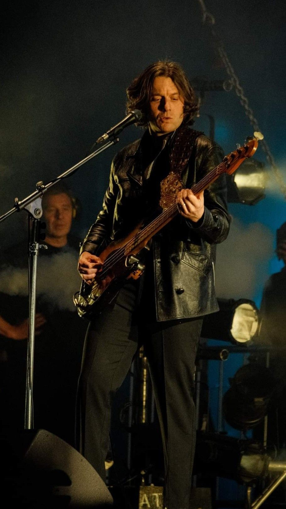

Members

Alex Turner
Born 6 January 1986 (age 37) Sheffield, England.
Lead vocals, rhythm and lead guitar, keyboards, percussion.
He has also recorded with his side project involving Miles Kane, as The Last Shadow Puppets and as a solo artist.
He has won seven Brit Awards, an Ivor Novello Award, and a Mercury Prize, having been nominated six times for the latter.

Jamie Cook
Born 8 July 1985 (age 38) Sheffield, England.
Rhythm and lead guitar, keyboards, backing vocals.
Grew up with and lived next to Alex Turner.

Matt Helders
Born 7 May 1986 (age 37) Sheffield, England.
Drums, percussion, backing and occasional lead vocals, keyboards.
In 2015, Helders collaborated with Iggy Pop and Queens of the Stone Age's Josh Homme and Dean Fertita to record Pop's studio album, Post Pop Depression (2016).
Helders released his own clothing line, consisting of a jacket, a zip hood and three T-shirts. The garments went on sale in May 2007.

Nick O'Malley
Born 5 July 1985 (age 38) Sheffield, England.
Bass guitar, backing vocals.
In 2006 he replaced the previous bassist Andy Nicholson, before this O'Malley was the bassist for The Dodgems (now known as Elephant Keys).